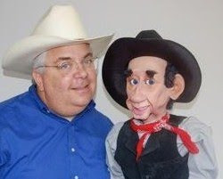
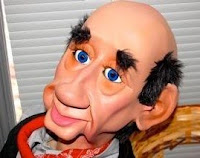

"Slim Chance"
11/10/2009
{kind=link}

Okay - maybe we're on to something here (see post below). Jeff Scott (left) just sent in these two pictures with the accompanying note:{kind=link}
"Hi, Clinton. I have this figure from Tim Cowles as a man... he is 'Slim Chance' the cowboy. The face is loaded with character and gets a great response. (the picture does not do either one of us justice!)
This figure is bald on the top of his head and hair on the sides... dressed in a suit he makes a great looking butler. Dressed in an apron, he looks like a grocery store clerk. Honestly, the lines on the face set this character apart... good luck to Hillary.... Blessings, Jeff Scott "
{kind=link}

This figure is bald on the top of his head and hair on the sides... dressed in a suit he makes a great looking butler. Dressed in an apron, he looks like a grocery store clerk. Honestly, the lines on the face set this character apart... good luck to Hillary.... Blessings, Jeff Scott "
Creativity and imagination make a wonderful combination with priceless results! Thanks, Jeff!